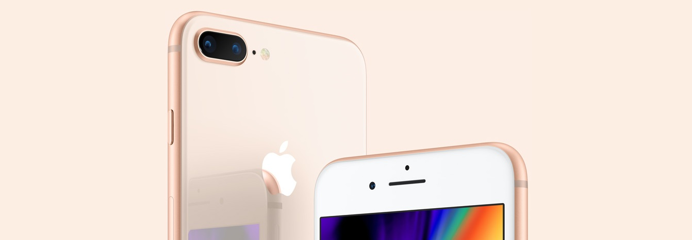
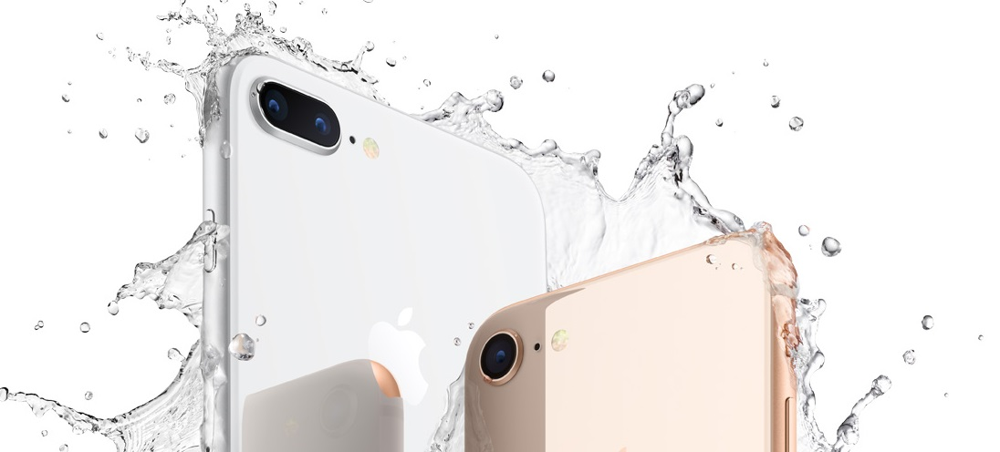
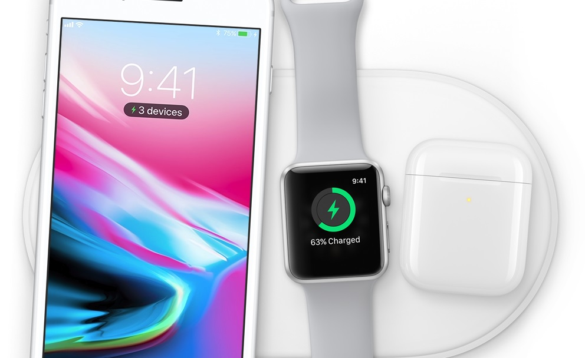

|
iPhone 8 pastreaza panoul frontal “iconic” al iPhone, compania Apple evitand sa faca o schimbare pentru modul in care arata acesta, iar asta pentru ca vrea ca telefonul sa fie usor de recunoscut oriunde. In aceasta idee, primul contact vizual cu iPhone 8 va va aduce instant aminte de oricare dintre ultimele 3 modele lansate inaintea sa, toate avand un panou frontal identic, din pacate pentru clienti. 
Trecand la carcasa lucrurile se schimba, deoarece sticla revine la moda, iar compania Apple a inlocuit carcasa din aluminiu cu una de sticla, cea mai rezistenta folosita intr-un telefon, conform lor. Sticla ii ofera un aspect foarte elegant telefonului iPhone 8 si nu este chiar atat de alunecoasa precum ar parea la o prima vedere, schimbarea fiind una care trebuia facuta acum mai bine de un an, din punctul meu de vedere. Carcasa din sticla a iPhone 8 denatureaza totusi culoarea folosita pentru a colora materialul de sub ea, astfel ca gri-ul spatial apare in poze ca o versiune a jet black, insa in realitate nuanta e diferita. Acelasi lucru este valabil si pentru culoarea argintie a iPhone 8, care in poze pare alba, dar in realitate arata de fapt cu mult mai diferit, deci daca inca va ganditi sa cumparati telefonul, stiti la ce sa va asteptati. 
iPhone 8 nu are alte schimbari notabile in afara carcasei din sticla, separat de faptul ca telefoanele sunt usor mai groase si unele carcase, sau huse, ar putea fi incompatibile. Inainte sa inchei acest capitol, va spun ca sticla carcasei ramane cel mai fragil punct al iPhone 8, desi compania Apple spune ca ea este rezistenta, realitatea o contrazice “cu varf si indesat”. iPhone 8 are acelasi ecran cu diagonala de 4.7 inch precum predecesorul sau, insa spre deosebire de acesta, vine cu functia True Tone preluata din tabletele iPad. Ce inseamna asta? Ei bine True Tone este o functie implementata de catre compania Apple in iPhone 8 pentru a proteja ochii utilizatorilor, el modificand luminozitatea si culorile ecranului in functie de lumina ambientala pentru a usura utilizarea in spatiile cu lumina slaba. iPhone 8 are o optiune pentru a activa functia True Tone disponibila in meniul 3D Touch pentru controlarea luminozitatii ecranului, astfel ca in baza ei puteti activa, sau dezactiva functia. Ecranul iPhone 8 are o serie de senzori integrati, separat de cel pentru lumina ambientala, pentru a permite folosirea functiei True Tone, iar cu ea va trebui sa va obisnuiti putin inainte de a va decide daca merita sa o folositi, sau nu. 
iPhone 8 ramane cu aceeasi gama mare de culori pe care este capabil sa o afiseze pe ecranul cu suport DCI-P3, fiind cel mai bun ecran LCD de acest gen din smartphone. Separat de asta, nici macar rezolutia nu a crescut dincolo de cea de 1334 x 750 pixeli, astfel ca singura imbunatatire pentru ecranul iPhone 8 in raport cu cel al iPhone 7 este functia True Tone, care nu este chiar atat de esentiala, desi este utila. |